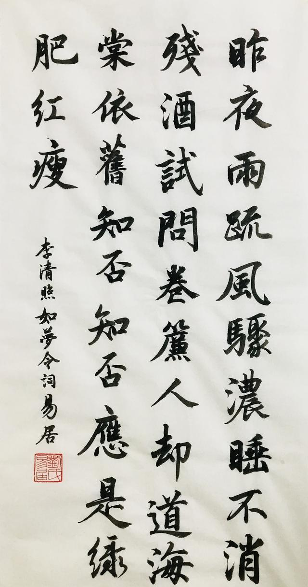
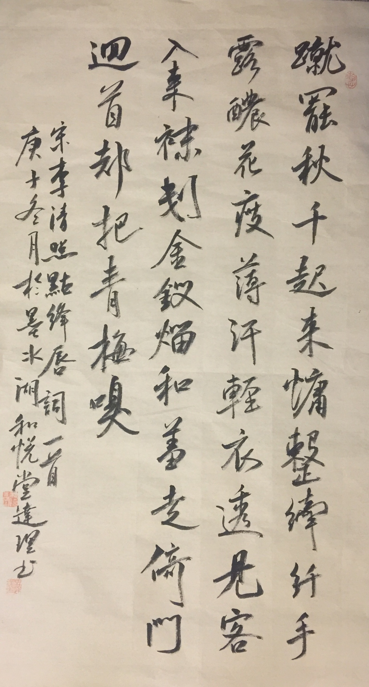
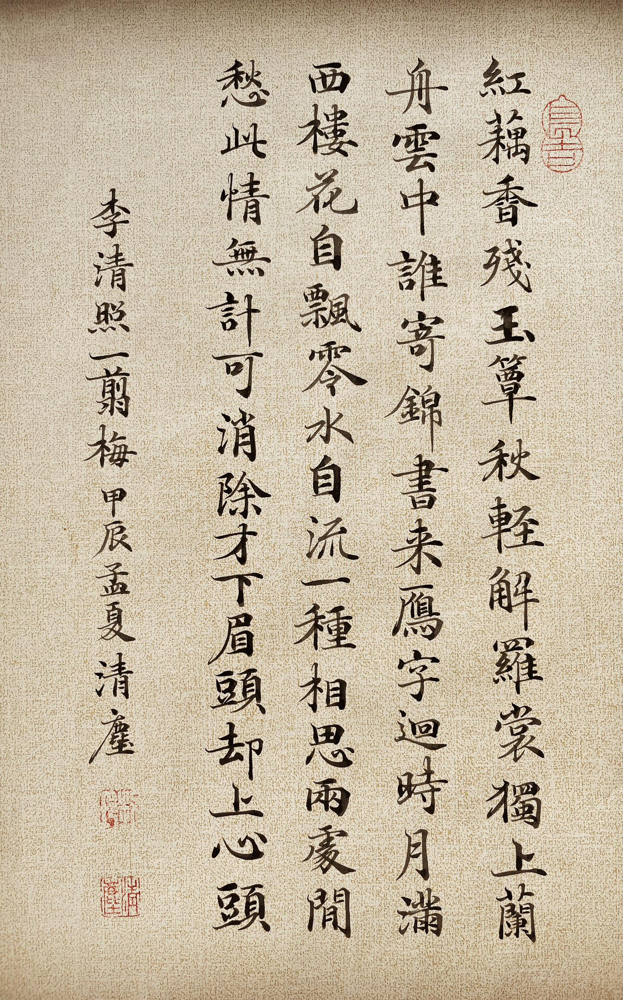
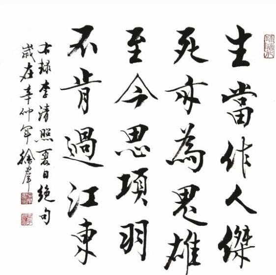
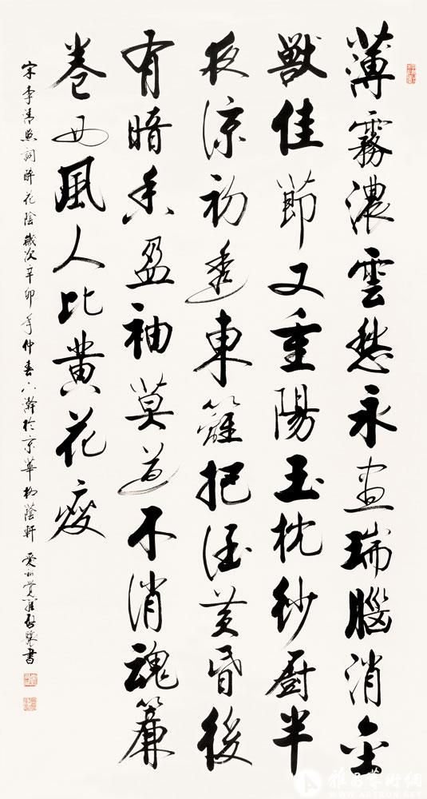
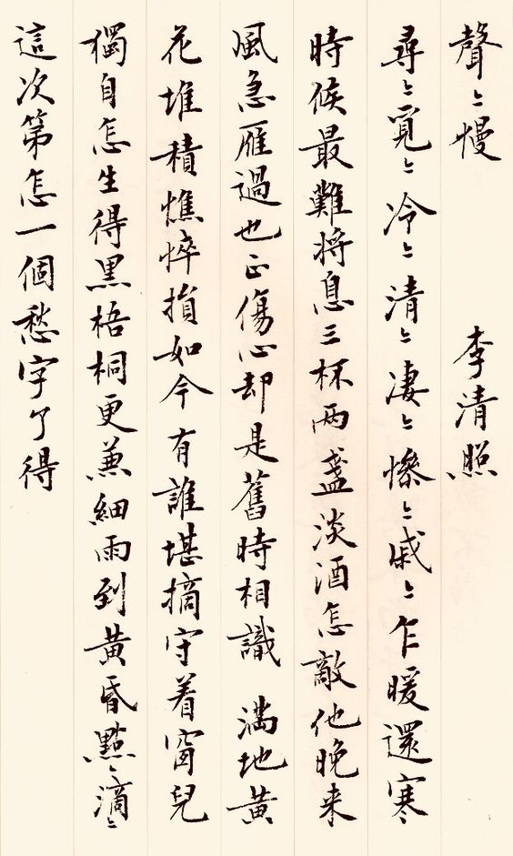
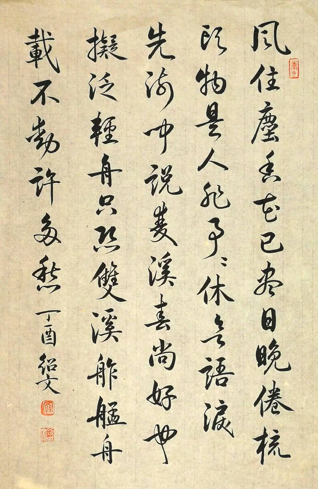

正式向文坛宣布，词作为独立文体的价值，词不应该是诗的附庸 强调了词与诗的分野，强调词配合词牌所对应的曲调演唱的重要性 通过对先前各家的评价中，系统地阐述了优秀词作的标准。 背景：苏轼“自是一家”论和豪放词的出现掀起了词坛论争，争论的焦点集中在三方面：
- 是苏轼打破声律是否可取，
- 是用词抒写豪情壮志的得失，
- 是词的风格是豪放壮美，还是婉约优美。
李清照存世作品并不多，词约50首，诗14首，文不足10篇。其实李清照集的宋刊本本来有很多，但都已经失传，现存的作品都是从明清的选本、笔记中搜罗来的。
《如梦令·昨夜雨疏风骤》

《点绛唇·蹴罢秋千》

《一剪梅·红藕香残玉簟秋》

《夏日绝句》

《醉花阴·薄雾浓云愁永昼》

《声声慢·寻寻觅觅》

《武陵春·春晚》

正式向文坛宣布，词作为独立文体的价值，词不应该是诗的附庸 强调了词与诗的分野，强调词配合词牌所对应的曲调演唱的重要性 通过对先前各家的评价中，系统地阐述了优秀词作的标准。 背景：苏轼“自是一家”论和豪放词的出现掀起了词坛论争，争论的焦点集中在三方面：
《词论》不但是宋代词坛上有独特见解，有组织条理的第一篇词论，更是中国女性作的文学批评第一篇专文。